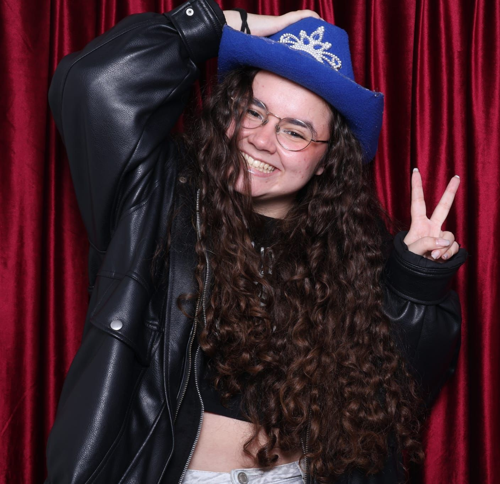

SOBRE MÍ
¡Hola, soy Sandra! Tengo 23 años y actualmente estoy terminando el grado universitario de Diseño Gráfico en la Escuela Superior de Diseño de Madrid, aunque ya cuento con un Grado Superior de Gráfica Impresa de la Escuela de Artediez de Madrid.
Ya sea en branding, diseño editorial o medios digitales, busco crear soluciones visualmente
atractivas que cuenten historias y dejen una huella duradera.
Me gusta pensar que soy bastante polifacética, ya que disfruto probando cosas nuevas y aprendiendo
de ellas. Me considero una persona creativa, curiosa y con muchas ganas de seguir aprendiendo
y creciendo en el mundo del diseño.
Cualquiera que me conozca sabría decir que además del diseño y la ilustración, me apasionan la música, la lectura y la fotografía. No podría vivir sin mi playlist de confianza y un buen libro que me acompañe a todas partes.